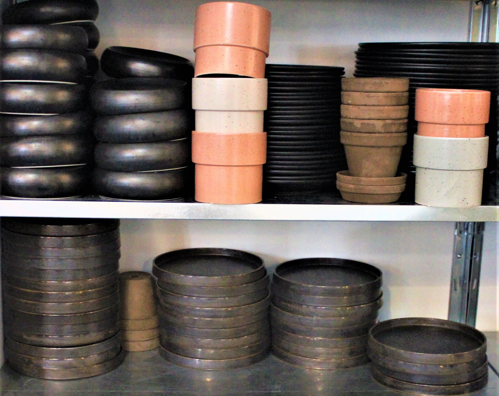

Atelier 1B
Gastronomisk Innovations lokaler på Frederiksborggade 1B ved Kultorvet i København også kaldet Atelier 1B, er vores kreative gastronomiske værksted og eksperimentarium. Vi tilbyder private dining med nogle af landets dygtigste og mest kreative kokke, smagninger, workshops, kokkeskole, teambuilding, foodstyling, opskriftsudvikling og meget mere i flotte rammer midt i København.
